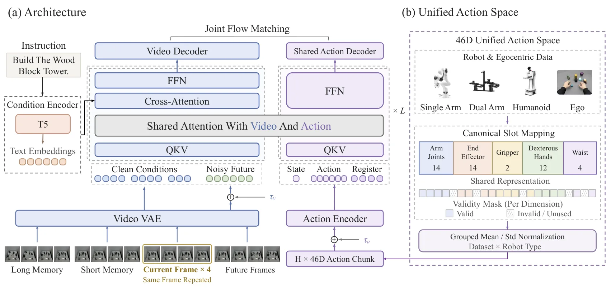
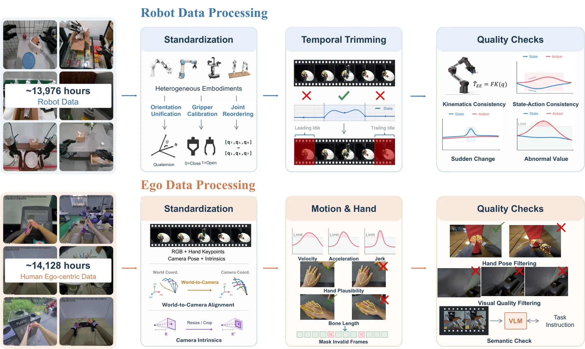
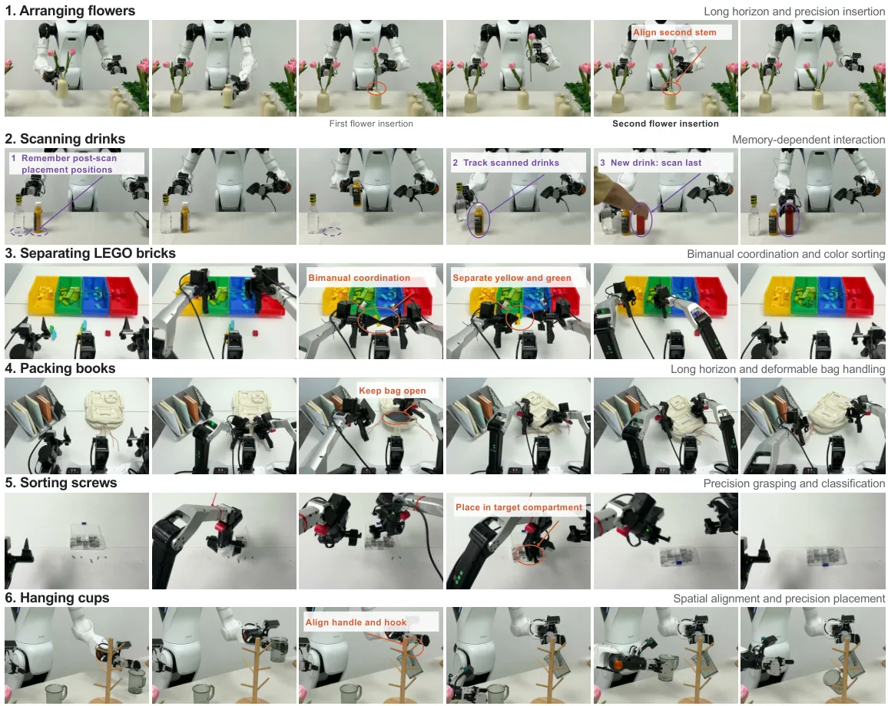

WorldBridge：在世界动作模型里桥接视频与动作以实现任务泛化
WorldBridge: Bridging Video and Action for Task Generalization in World Action Models
把任务泛化拆成“视频覆盖”和“视频到动作桥”两件事，用 MoT 双专家加联合 flow matching 实现。RoboTwin 2.0 平均 96.23%、Clean2Random 80.9%，RoboCasa GR1 82.8%、RMBench 83.0%、DOMINO 57.6%，SimplerEnv-WidowX 84.4%；真机经编译与 CUDA Graph 优化后约 7 Hz。
OOD success progression
RoboTwin average
Clean2Random average
median latency
作者、单位与技术谱系 · Research context
作者与单位
研究脉络
- Mixture-of-Transformers（Liang et al., 2025）方法基座关系：视频专家与动作专家的双流结构、联合自注意力直接采用 MoT。[论文 §2.1.1]
- DreamZero / Zero-WAM方法上游关系：前者证明视频先验可支持未见任务执行，后者研究 in-context human video guidance；本文把问题进一步拆成 video generalization 与 action generalization。[论文 §1]
- OpenWAM / LingBot-VA方法上游关系：作为 WAM 对照与训练/评测参照，本文在 RoboTwin 等基准上与它们比较。[论文 Table 3]
合作网络
- WorldBridge Team → Joy Future AcademyWorldBridge Team → Joy Future Academy关系：署名隶属[论文首页署名]
- WorldBridge → 官方项目页WorldBridge → worldbridge-jd.github.io关系：官方项目页[WorldBridge 项目页]
- WorldBridge → RoboTwin 2.0 / RoboCasa / RMBench / DOMINOWorldBridge → 评测基准关系：评测协议依赖[论文 §3.2]
论文只给团队署名，无法核验个人作者与单位分工；网络边只记录署名隶属、官方项目页与评测依赖，不推断团队内部关系。
方法本质拆解 · What actually changed
是不是微调？
是从头预训练加下游微调：先在机器人轨迹与 ego 手部数据上联合预训练视频/动作专家，再在 RoboTwin、RoboCasa 等基准上训练或微调；真机则对同一预训练 checkpoint 按平台微调。所有专家参数都参与训练，不是冻结主干只训 adapter。
有没有额外约束？
约束主要在数据与接口层：46 维统一动作空间、逐维有效性 mask、运动学/时序一致性过滤、ego 手部坐标统一到当前相机系，以及视频 latent 与动作块的联合 flow matching 目标。没有显式几何因子图或物理约束。
推理/后端到底做了什么？
推理时未来视频 latent 与动作块都从高斯噪声开始，按学习到的速度场联合去噪；视频去噪步数可以从 10 步降到 1 步而不改动作步数，配合 KV 缓存、编译与 CUDA Graph 把延迟从 957.2 ms 降到 103.9 ms。没有测试时搜索或在线优化。
方法本质是什么？
本质是“用视频专家提供任务如何演化的先验，用动作专家把该演化翻译成控制”，两者通过结构化注意力形成视频到动作的方向性通路。它改变的是监督来源与专家间的信息流；没有改变的是动作表示的基本形式（仍是动作块回归/flow）。
输入（多视角观测 + 语言 + 双尺度视觉记忆）→ 视频专家预测未来 latent、动作专家在结构化注意力下读取该预测 → 联合 flow matching 去噪 → 输出动作块；视频覆盖扩大任务范围，少量配对示范强化桥接。

桥接价值Bridge
桥接价值
具身策略的泛化通常被压成一个成功率，这篇把“看见过类似任务”与“会把看见的变成动作”分开测量，给出了可操作的监督配比：先把视频覆盖拉满，再用少量配对示范把逆动力学桥接住。这个结论对我们做数据配比很直接——在预算有限时，优先增加任务视频而不是等量增加动作标注。
方法与模块Method
方法摘要
WorldBridge 用 Mixture-of-Transformers：视频专家与动作专家各有参数与解码器，通过 joint self-attention 交换信息，视频专家再用 cross-attention 接语言。训练时分别采样视频 flow 时间 τ_v 与动作 flow 时间 τ_a，做联合 flow matching；推理时从高斯噪声同时去噪未来视频 latent 与动作块。记忆分短期（4 帧、步长 δ_s）与长期（4 帧、步长 δ_l）两路，经 causal VAE 编码后拼在当前帧前；action forcing 让同一动作块内的 token 处于不同噪声水平，迫使动作专家更多依赖视觉上下文。
可迁移模块
第一是监督量实验设计：固定 ID 数据，只改 OOD 视频数与动作标签数，直接估计“视频覆盖”和“动作 grounding”的边际收益。第二是 46 维统一动作空间加维度有效性 mask，把不同机器人、不同手爪与 ego 手部轨迹映射到同一接口，适合多源数据融合。第三是双尺度记忆与 action forcing，都是与主干解耦的模块，可以搬到其他视频-动作模型上做消融。

证据Evidence
关键证据与数字
Table 2（RoboTwin 2.0）：ID-only 的 OOD 25.07%；加 550 条 OOD 视频到 55.90%（+30.83）；每任务 1 条动作到 70.70%，5 条到 84.67%，20 条到 90.03%，100 条到 93.17%，550 条到 92.83%。Table 3：Full 设置 96.16/96.30、平均 96.23%；Clean2Random 88.3/73.4、平均 80.9%。Table 4：RoboCasa GR1 82.8%、RMBench 83.0%、DOMINO 57.6% SR / 64.6 MS、SimplerEnv-WidowX 84.4%。Table 6：action forcing 把 RoboTwin 从 91.28 提到 93.31，加短时记忆 +0.67、加长时记忆 +1.22，最终 95.20。Table 7：无预训练 62.7，机器人预训练 77.4，再加 ego 预训练 80.9。
边界与下一步Limits & Next Step
边界与风险
Table 2 的 550 条 OOD 动作设置（92.83%）反而略低于 100 条（93.17%），说明动作监督的边际收益已经饱和，继续加标注不一定更好。Clean2Random 的随机场景只有 73.4%，比 Clean 的 88.3% 低 14.9 个点，域随机化仍是短板。真机结果是在 AgiBot G2 与 AC-1 上各自微调同一预训练 checkpoint，不是零样本；DOMINO 57.6% 也说明动态目标操作仍未解决。论文没有单列局限章节，训练数据规模、epoch 与失败分类披露有限（待核验）。
下一步实验
第一步在我们的多源数据上复刻“视频数 × 动作标签数”的二维网格，先确认边际收益曲线是否同样在 20–100 条之间饱和。第二步把 46 维动作空间裁成我们需要的子集，测试维度 mask 是否会让跨本体迁移变差。第三步做记忆消融的时长扫描：短时/长时步长各取 2–3 档，看收益是否来自“更长历史”还是“两个尺度”本身。



